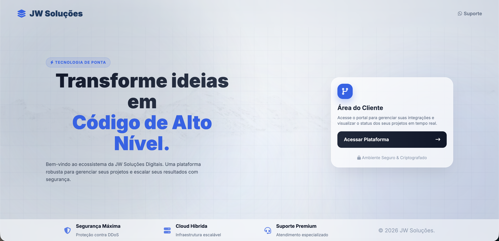

Sou Desenvolvedor Jr e Analista de Sistemas, apaixonado por
tecnologia e resolução de problemas.
Atualmente, concilio minha atuação profissional com a
graduação em
Engenharia da Computação na SCTEC.
Desde pequeno eu sempre fui apaixonado por jogos 🎮. Passava horas explorando mundos,
descobrindo estratégias e tentando entender como tudo funcionava por trás da tela.
O que começou como diversão acabou despertando algo maior: curiosidade sobre tecnologia
e sobre como os computadores realmente funcionam.
Com o tempo, comecei a mexer no computador além dos jogos — explorando configurações,
instalando programas, tentando entender erros e aprendendo na prática.
A curiosidade virou interesse, e o interesse virou objetivo. Foi aí que percebi que
não queria apenas usar tecnologia… eu queria criar com ela.
Essa vontade de entender e construir coisas me levou direto para a área de
desenvolvimento.
Comecei estudando por conta própria, testando, errando, pesquisando e evoluindo a cada projeto.
Descobri que programar é como montar um jogo: você precisa de lógica, estratégia e criatividade.
Hoje sigo me aprofundando cada vez mais, buscando aprender novas tecnologias
e transformar ideias em soluções reais. A tecnologia que começou como hobby
se tornou minha escolha profissional — e estou sempre pronto para o próximo desafio 🚀
Meus Projetos
Estacionamento Inteligente
Um projeto pensado para facilitar a vida de quem dirige! 🚗💡 O Estacionamento Inteligente
organiza vagas, controla entradas e saídas e ajuda a reduzir o tempo perdido procurando espaço.
Com uma interface simples e funcional, o sistema mostra como tecnologia pode resolver problemas
do dia a dia de forma prática e eficiente. Dá uma olhada no link para ver funcionando!
Sistema Interno Saas

Um sistema interno no estilo SaaS criado para deixar tudo mais organizado e produtivo.
A ideia foi centralizar processos, automatizar tarefas e tornar o dia a dia mais simples.
Totalmente acessível pelo navegador, com foco em usabilidade e performance.
Projeto ideal para mostrar como transformar uma necessidade real em solução digital 🚀
Gerenciador de Ferramentas
Chega de perder ferramenta ou esquecer quem pegou! 🔧😅
Esse sistema foi desenvolvido para controlar empréstimos, organizar o estoque e acompanhar
prazos de devolução de forma prática. Simples, direto e eficiente — mostrando como a tecnologia
pode resolver problemas comuns de maneira inteligente.